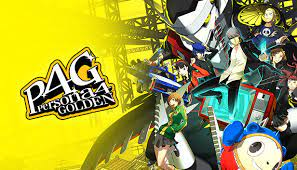
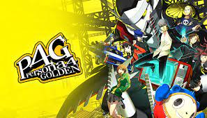

Persona 4 Golden
-
Price: $30
-
Rating: 9.3/10 IGN
-
Developer: Atlus
-
Release Date: 14th of June, 2012
Price: $30
Rating: 9.3/10 IGN
Developer: Atlus
Release Date: 14th of June, 2012
 

Persona 4 Golden, the 4th major addition to the Persona Series, is my personal favourite out of the Persona series.
The game revolves around uncovering mysteries with fun gameplay and a cool split gameplay between fighting and daily school life.
Persona 4 Golden is also home to one of the most amazing OSTs but personally Persona 4 Golden is one of the weaker OSTs out of the series.
If you're interested in what the OST has to offer then click the youtube video below: